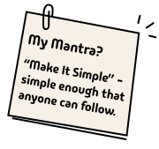
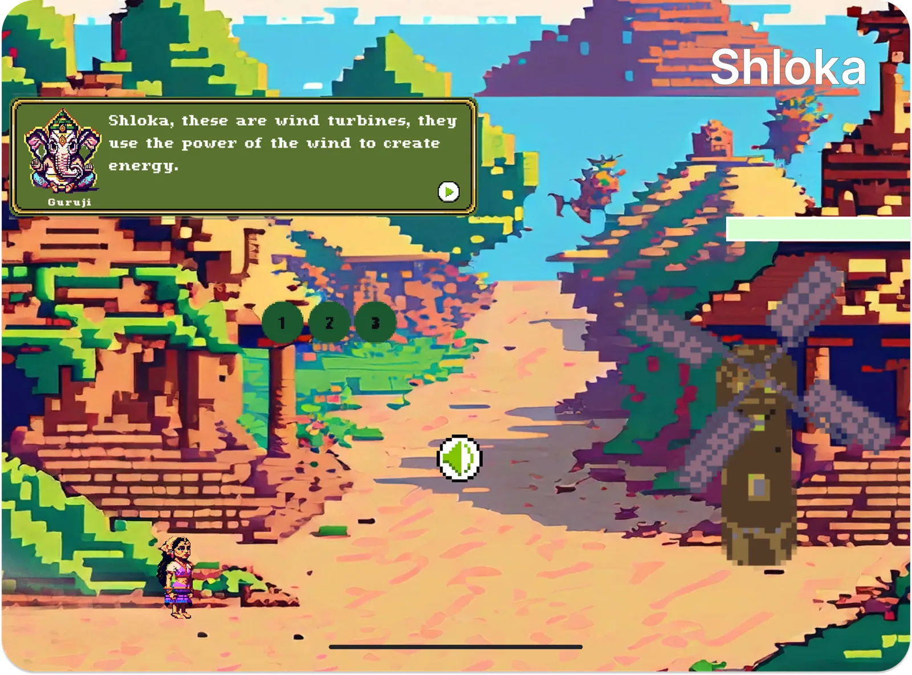

ARWell Pro

Redesigned therapist-led workflows across session setup, patient management, game selection, and rewards—cutting setup and documentation time by 42%.
View Case Study →I’m working on AI assistant experiences—turning complex system behavior into clear interactions across voice, reliability, and recovery.

Designing AR therapy experiences that made movement clearer, sessions easier to manage, and progress more rewarding.
Redesigned therapist-led workflows across session setup, patient management, game selection, and rewards—cutting setup and documentation time by 42%.
View Case Study →
Redesigned movement guidance, feedback, and rewards to make the AR experience clearer and more motivating—raising SUS from 71.5 to 92.5.
View Case Study →Designing culturally grounded game interactions that made climate action more engaging, memorable, and meaningful.
Designed ritual-based interactions, narrative, and game mechanics that transformed climate learning into an immersive experience that outperformed nine existing titles.

Designing structured, game-like AI experiences that support curiosity, participation, and deeper learning.
Designed across the StudyCrafter AI ecosystem, translating the taxonomy into experiences for creating, testing, and using gamified learning prompts.

Turning complex system behavior into clearer interactions across conversational AI, robotics, and wearable hardware.
Translated evaluation findings across conversational AI, robotics, and wearable hardware into clearer interaction patterns and product improvements.
Request Case Study →